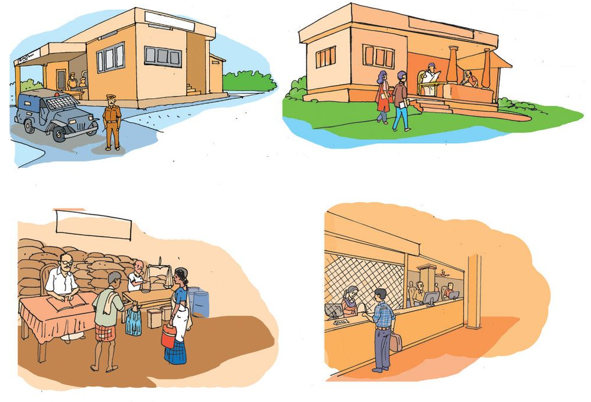

Anu loves listening to stories of the past. As usual,
after supper, grandmother began telling one...
“Son, our land was not like this in the past. Houses
with thatched roofs and dung flooring. Nights lit
dimly with kerosene lanterns. Kitchens with the
ural, uri, earthern pots and vessels. Very few who
went to school... What else could they do? The
children become fed up walking a long distance.
More miserable was the plight of the people
carrying loads. As there were no proper roads
they had to walk along longer paths with heavy
loads on their heads. The ‘loadrests’ on the side of
their way was indeed a single relief..."
Did you listen to grandmother’s
story of the land?
What is the name of your land?
Won’t your land also have
a history like this?
How can we know it?
Whom will you enquire to?
You can ask your grandmother or elders.
What all will you ask them?
The agriculture of the time.
Occupations.
Food.
Home appliances.
Places of worship.
Festivals.
Public institutions.
Ch-sb√mw Dƒs∏-SpØn \nß-fpsS \mSns‚
IY-sb-gp-Xq?
Every land has a history of
its own. While you tried to
know about your land, did
you come across anything
like that in the picture?
Write it down.
There are some signs around us even today, that
remind the history of the land. We must conserve them.
129
My land today
My land has changed a lot from
the past.
In what areas have these
changes come upon?
Let us try to know.
My land
In the past
Agriculture
Occupation
Games
Transportation
Public institutions
The changes were made according to
the needs of the people.
The changes in the land improved the
standard of living of the people.
Changes continue to occur as the
needs increase.
Environmental Science
Did all changes of a land lead to
progress? Try to find out.
Do you know who owns the
responsibility for fulfilling the
common needs of the people of a
land?
130
Today Local Self Government fulfil the common needs
of people of a locality. The people of a locality elect
their representatives to these Local Self Government.
The representatives are elected by voting.
Which are the Local Self Government bodies?
Grama Panchayaths, Municipalities and Corporations
are the Local Self Government bodies.
Put a mark in the place where you live.
Grama Panchayath
Municipality
Corporation
Write the name
The Panchayath President is the head of a Grama
Panchayath. Municipal Chairman is the head of the
Municipality. Mayor is the head of the Corporation.
The elected representatives from each ward or
division decides their administrative head.
They are Grama Panchayath, Block Panchayath and the Jilla
Panchayath.
In the urban areas it is a Municipality or Corporation.
131
Know your land
Kerala has the three tier system of Local Self Government.
Identify names and write them down
My Grama Panchayath/
Municipality/ Corporation
My Block Panchayath/
My Jilla Panchayath/
The elected representative of a Panchayath is called a Ward
Member. The elected representative of a Corporation or
Municipality is called a Councillor.
Who is your Ward Member or Councillor?
Don’t they take part in the important functions of your
school?
To the Gramasabha
Environmental Science
It is a very
busy day today.
But I must attend the
Gramasabha.
GRAMASABHA
Yes, all development
schemes of the locality are
planned in the Gramasabha.
It is our duty to participate
in it.
Did you notice the conversation?
Why is it said that one should attend in the Gramasabha
compulsorily ?
In the Gramasabha people of a locality assemble to
discuss the developmental needs of the locality.
Based on the discussion they suggest new schemes.
School as a public institution
Your school is a public institution.
What are the facilities and services you get at school to learn
and grow?
Textbooks
Scholarships
133
Know your land
Education is our right. Schools ensure the right to education.
Page 70
Figure fig_ch06_p070_01 (Page 70)

Figure fig_ch06_p070_02 (Page 70)
What are the other public institutions that serve us?
Polic
e sta
tion
Ration shop
Library
Bank
Which are the public institutions in your locality?
Public institutions serve to fulfil the needs of the people.
List down the services of the public institutions.
Let’s unite for a better future
We have learnt about Local Self Government bodies and public
institutions. Besides these, there are other institutions and
organisations that work for the welfare of the people.
$ Library and Reading room
$ Clubs
$ Kudumbasree units
Which are the other organisations in your locality?
Our land has many things we can be proud of. It is the
unity of the people that leads to the progress of a locality.
The unity of the people is the strength of a land.
Significant learning outcomes
identifies that our land has a history and records it.
identifies and explains the symbols of our history.
understands and explains the various changes that have
come upon our land.
identifies and explains that the progress of a locality is
based on the needs of the people.
identifies and states that a land has its own form of
government and that administrative bodies fulfil the needs
of the people.
explains that the Grama Panchayath/Municipality,
Corporation are Local Self Government institutions and that
the Grama Panchayath, Block Panchayath and Jilla
Panchayath make the three tier systems of the Panchayath.
explains about public institution and their services.
135
Let us assess
1. Match the following.
Elected
Administrative head
Local Self Government body
Grama Panchayath
Chairman
Municipality
Mayor
Corporation
President
2. Prepare note including the public institutions of your locality
and their services.
3. Which institution owns the responsibility to fulfil the needs
of a locality?
a. Police station b. Village office c. Grama Panchayath
4. The head of Grama Panchayath
a. Panchayath Secretary
b. Ward Member
c. Grama Panchayath President
5. The gathering of the people of a locality to discuss and decide
the developmental schemes of a Ward.
a. Kudumbasree b. Gramasabha
c. Ayalkoottam
Environmental Science
Extended activities
Interview with public persons.
Visit to a public institution.
Nattucharithram - pamphlet.
Visit a Gramasabha with your family.
Conduct an interview with the elders of your locality to know
the past of your land.
Visit a nearby library and reading room. Write a brief report
on the visit